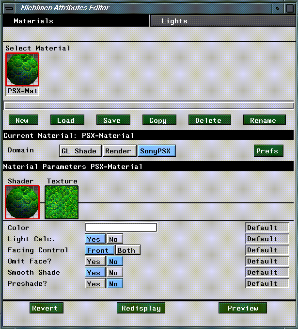

This chapter outlines briefly the procedure for exporting objects, textures, and animation to the Sony PlayStation platform. It also describes the parameters and attributes you'll use to define materials for the SonyPSX render domain. In the last section of this chapter, we'll create an object, define a Sony PSX domain material, attribute the object, then preview it on the PSX.
The SonyPSX Domain Materials and Inheritance
Materials are groups of attributes which determine the appearance of an object in a rendered scene. In N·World, materials are separate data structures, which you must associate with objects using the Nichimen Browser. This system provides for enhanced flexibility, since you can define a single material and apply it to many objects. In object based systems, you must redefine object attributes for each object in a scene.
The method for creating materials is no different for the SonyPSX domain than for any other domain. To learn how to create materials, as well as how to specify attribute inheritance from one material to another, see the N-World Attributes Editor User's Guide. The section "Previewing Attributed Objects," on page 2-2 illustrates how to create, attribute, and display an object specifically on the PlayStation.
The Attributes Editor
You define materials using the Attributes Editor. To launch the Attributes Editor, (CLICK-L) on the Attributes button in the config bar.

`SonyPSX Domain Defaults
(Click-L) on the Prefs button to define a number of settings for the SonyPSX domain.
Map Directory
The default directory from which maps are read.
Max World Coords
Scaling factor used when converting the floating point coordinate values (used to represent objects in N-World) to a fixed point coordinate value on the PlayStation. A higher value means your objects will appear smaller on the PlayStation, while a lower value means your objects will appear larger.
The LISP formula used to convert the floating point value to a fixed point value is as follows:
(round (* 32768 (/ number *max-coord-value*)))
(round (* 32768 (/ 1.0 1000)))
32
FTP
When you preview objects and animations on the PlayStation, the data are FTP'd to a PC host which is in turn connected to the playstation. Before you can use PlayStation Express, you need to be sure that you have an FTP account on the appropriate PC. You can specify default hostnames, usernames, and passwords to use during the FTP login.
SonyPSX Attributes are divided into two sections:, Shader and Texture. Shader parameters control how the shader renders the scene, while Texture parameters control how texture maps are applied to objects in a scene.
SonyPSX Attributes
Shader Attributes
Color
Default: White
The color attribute is used for two purposes in the SonyPSX render domain:
The smooth shade parameter selects either "color by vertex" or "color by face." (Figure 7.3)
Figure 7.3 Color by vertex vs. color by face
Texture Parameters
Texture Map
Default: None
SonyPSX Domain Commands Revert
Redisplay
Redisplay the scene on the SGI.
Preview
Preview the current scene on the PlayStation.
Copyright © 1996, Nichimen Graphics Corporation. All rights reserved.